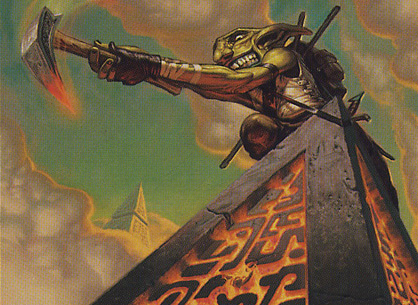

Nelson de volta com mais Commander budget pra vocês! E hoje eu resolvi fazer uma coisa diferente, ao invés de trazer um dos meus decks, eu trouxe um deck que eu odeio amar, o tribal de aliados do meu irmão.
Fala, galera, tudo bem?
Nelson de volta com mais Commander budget pra vocês! E hoje eu resolvi fazer uma coisa
diferente, ao invés de trazer um dos meus decks, eu trouxe um deck que eu odeio amar, o tribal de aliados do meu irmão.

eu já perdi a conta de quantas vezes ele usou esse mesmo deck para limpar o chão comigo me fazendo até questionar tanto minhas habilidades como jogador, quanto minha competência como deckbuilder enquanto eu gritava “eu não aguento mais apanhar pra esses %#!$@ desses aliados!!!”

Muito bem, se trata de um deck de cinco cores que quer uma presença forte no campo de batalha com criaturas com muita sinergia entre si apoiadas por encantamentos poderosos para soterrar os adversários com um ataque fatal.
A comandante é Tazri, Farol da Unidade, e embora ela não seja um aliado propriamente dito, a mesma tem total sinergia com as outras criaturas do deck, porque a sua habilidade permite olhar as seis cartas do topo do deck, além de revelar e colocar até dois aliados na sua mão (O mesmo vale para clérigos, ladinos, magos e guerreiros. Porém embora algumas das criaturas desse deck sejam desses tipos, todas são aliados, então tratarei todas apenas como aliados).

Além disso, ela ainda tem uma habilidade que reduz o seu custo de conjuração em um mana genérico para cada criatura no nosso grupo (um grupo é formado por um clérigo, um ladino, um mago e um guerreiro), o que acaba sendo bem útil em algumas partidas.